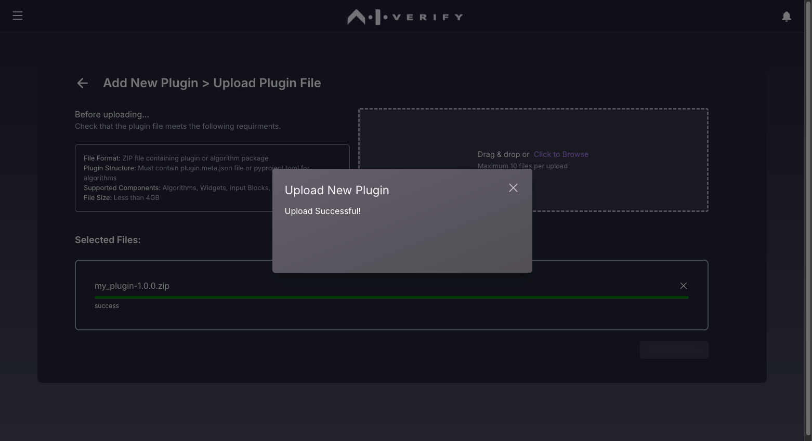
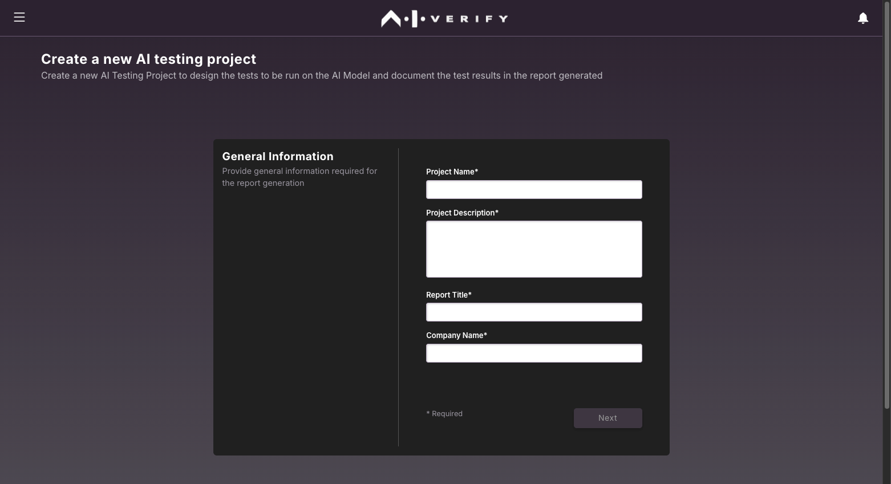
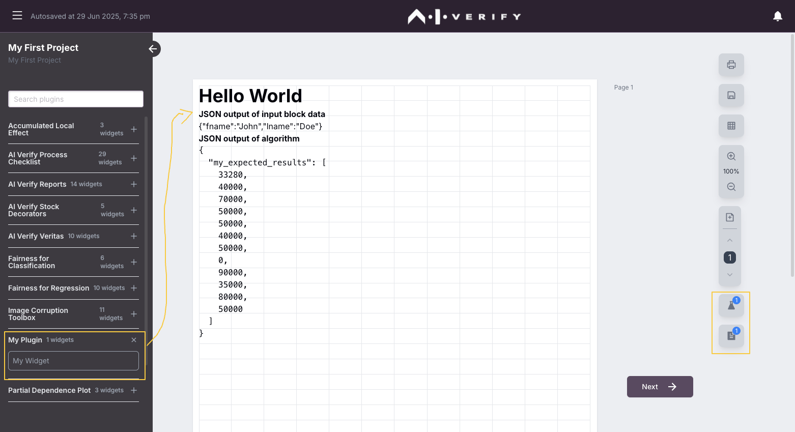

Deploy Your Plugin
Now that you have created your plugin component(s), it is time to package it into a single plugin for deployment.
If you are following the guided example, you should have the following components completed and packaged in its own respective folders:
- your-first-algorithm-component component
- your-first-widget component
At this point, you may decide if you wish to deploy the components as two separate plugins (i.e. algorithm plugin and widget plugin), or combine and package it as a single plugin. Each method comes with its own rationale and benefit.
| Deployment Style | Description | Rationale |
|---|---|---|
| Combine | Combine components into a single plugin zip | Combine components when they are tightly coupled, eg. input block component needed for the algorithm component to run properly, widget component needed to display algorithm results etc |
| Separate | Separate the components into its own respective plugin zips | This is a more modular design approach. Some components do not have additional dependencies, or are add-ons to existing plugins. eg. Additional widget plugins for different ways to display algorithm results. |
Combine the plugin components
The template_plugin directory should mimic the same plugin structure. The algorithms directory should contain algorithms, with each one in its own respective folder. The widget components will be stored in the widgets directory.

In this guided example, the algorithms directory will have the folder your_first_algorithm_component. The widgets directory will contain mywidget.meta.json, mywidget.mdx, and your_first_algorithm_component.sample.json.
It should look something like this:

Edit Plugin Details (Optional)
You may wish to edit plugin.meta.json to change the plugin details.
| plugin.meta.json | |
|---|---|
Deploy your Plugin
We have provided a script that helps package and deploy your plugin. If you have not created a widget component at this point, this will package the algorithm as a standalone plugin. To run the script, navigate to the directory with the script deploy_plugin.sh. This is located at the root of template_plugin folder. At the directory, enter:
Note
A new folder dist will be created. This folder is where the packaged .zip file will be created and placed.
If you did not edit the gid, verify that the zip file your_first_plugin-0.1.0.zip exists in your dist directory:
The resulting plugin is packaged as a zip file, which can be used to share with other developers who are interested in using your plugin. Users and developers can then upload the zip file onto AI Verify through the plugin manager and use it in the report.

Uploading the plugin
To upload the plugin, start the frontend portal of AI Verify. You will need to install AI Verify if you have not done so. The instructions to install and run AI Verify from source code can be found in the User Guide.
-
Once the portal is started up, visit the portal at http://localhost:3000/home. In the homepage, click on "Plugins" to visit the Plugin Manager page:

-
In the Plugin Manager page, click on "INSTALL PLUGIN" at the top right and select
your_first_plugin-0.1.0.zip, then click on "INSTALL" :
-
The following prompt should appear to inform you that the plugin has been installed successfully:

-
You should see your plugin in the list of installed plugins:

Generating the Report
- It is time to run the plugin. In the homepage, click on "Create New Project":
- Fill in the project details and click "Next" on the top right: 
- On the Design Report page, drag your widget from the left panel to the canvas:  You can resize the the widget and click on the alignment buttons to refresh its size. When you're ready, click "Next" on the top right.
-
On the Select the Datasets and AI Model to be tested page, select and upload the dataset, ground truth dataset and model. You can use the dataset provided in the template or download from here. Refer to the following table for reference.
Data, Model, and Test Arguments Selected Dataset / Model / Test Arguments Testing Dataset pickle_pandas_mock_binary_classification_credit_risk_testing.savGround Truth Dataset pickle_pandas_mock_binary_classification_credit_risk_testing.sav, Ground Truth:defaultAI Model binary_classification_mock_credit_risk_sklearn.linear_model._logistic.LogisticRegression.savTest Arguments gender -
For the model, choose
Upload AI Modeland click "Next".
- We will be uploading the
binary_classification_mock_credit_risk_sklearn.linear_model._logistic.LogisticRegression.savmodel.
- Type
genderinto the plugin arguments. The end result should look like this.
- When you are ready, click on "Next" on the top right. Click on "PROCEED" when prompted:

- You should see the logs of what is happening in the backend and when your report has been generated, you should see the "Test Completed" prompt in the top right. Click on "VIEW REPORT" to see your report:

- Your report will be displayed as a PDF file.
 Congratulations! You have generated your first report.
Congratulations! You have generated your first report.